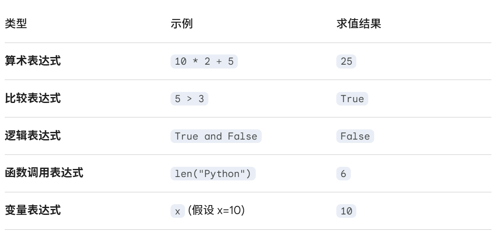

Python 的基础¶
对Python的语法基础进行分析
1 注释与格式¶
1.1 注释方法¶
- 单行注释：
#这是一个注释 - 多行注释：
"""你好 这是多行注释 """ ''' 三个单引号也可以 '''
1.2 写作格式¶
1.2.1 长度限制¶
!!!
Python 官方建议：一行代码最多不要超过 79 个字符。
很多现代团队（比如著名的代码格式化工具 Black）会将限制放宽到 88 个字符 甚至是 100~120 个字符。
如果一行中一个代码太长，可以用如下的方式解决：
1.2.2 写作换行¶
当一行代码过长（超过 79-88 字符）时，Python 提供了多种折断代码的方法。
A. 括号隐式换行（最推荐）¶
在 Python 中，圆括号 ()、中括号 [] 和大括号 {} 内部允许直接换行。解释器会自动寻找闭合的括号，这种方式最安全且代码最整齐。
# 1. 函数调用或 print 中的长参数
print("这是一个非常长的句子，",
"我们可以通过括号将其分成多行输出，",
"这样每一行都不会过长。")
# 2. 长数学运算
total = (math_score + english_score +
chinese_score + physics_score)
# 3. 列表、字典的定义
fruits = [
"apple", "banana", "cherry",
"orange", "watermelon"
]
B. 反斜杠显式换行（显式接续）¶
如果你不在括号内，但又必须换行，可以使用反斜杠 \。它告诉 Python这一行还没完，请看下一行。
Danger
反斜杠 \ 后面绝对不能有任何空格或注释，否则会报错。
# 使用 \ 将一行逻辑拆分为两行
result = 1 + 2 + 3 + 4 + \
5 + 6 + 7 + 8
# 长路径或长字符串，下例无需对齐头部缩进
path = "C:/Users/Administrator/Documents/Python/Project/" \
"Scripts/main.py"
path = "C:/Users/Administrator/Documents/Python/Project/\
Scripts/main.py"
print(path)
# 会把第二行左边的空格也读取上
C. 字符串自动拼接¶
在 Python 中，两个紧邻的字符串字面量会自动合并为一个。利用这个特性配合括号，可以优雅地写出长文本。
# 每一行都是独立的引号，但最终会被合并
long_text = (
"这是一段很长的话，"
"我把它拆成了三行，"
"但在程序运行过程中，它依然是一个整体。"
)
print(long_text)
D. 逻辑拆分（提取变量）¶
如果一行代码因为嵌套太多而变长，最聪明的办法不是“换行”，而是“拆分”。将复杂的子表达式提取为独立的变量，可以极大提高代码的可读性。
# ❌ 不推荐：一行写完所有逻辑
if user.is_active and user.has_permission("admin") and not user.is_banned:
print("访问成功")
# ✅ 推荐：拆分为有意义的变量
is_admin = user.has_permission("admin")
can_access = user.is_active and is_admin and not user.is_banned
if can_access:
print("访问成功")
换行对比表¶
| 方式 | 语法 | 推荐场景 | 优点 |
|---|---|---|---|
| 隐式换行 | ( ... ) |
打印、列表、元组、函数调用 | 最符合 PEP 8 规范，最安全 |
| 显式换行 | \ |
复杂的 if 或 with 语句 |
简单粗暴，不受括号限制 |
| 字符串拼接 | ( " " " " ) |
长文本输出 | 不会引入多余的空格或换行符 |
| 逻辑拆分 | a = x + y |
所有复杂的一行流代码 | 提高可读性，方便调试 |
深度避坑：f-string 的换行陷阱¶
Warning
在 f-string 中使用三引号 """ 换行时，每一行前面的缩进空格也会被计入字符串中。
# 这样写会导致输出结果带有很多前导空格
def my_func():
text = f"""
Hello
World
"""
print(text)
f-string 中使用“括号隐式换行”配合多个引号，以保持代码缩进的同时不产生多余空格。
2 语句与表达式¶
2.1 表达式 vs 语句 (Expression vs Statement)¶
!!! 这是初学者最容易混淆的一对概念：表达式 (Expression)： 它是 “结果导向” 的。它就像一个计算题，总会给你一个答案。语句 (Statement)：它是“动作导向”的。它是在命令计算机执行某个任务。
3 #这是一个表达式，有具体的结果
a=1 #而这是一个语句，它没有返回值
2.2 表达式的类型¶

2.3 语句的类型¶
在 Python 中，语句主要分为两大类：简单语句和复合语句。
A. 简单语句 (Simple Statements)¶
这类语句通常只有一行。
- 赋值语句：给变量起名并存入值。
x = 5
- 表达式语句：虽然表达式本身不是语句，但单独放一行时，它被视为语句。
print("Hello")（调用函数其实是一个有返回值的表达式，哪怕是None）
- 导入语句：引入外部工具箱。
import math
- 跳转语句：改变循环或函数的流向。
break/continue/return/pass
- 删除语句：删除引用。
del x
B. 复合语句 (Compound Statements)¶
这类语句通常包含一个“头部”和缩进的“代码块（Body）”，用于控制复杂的逻辑。
- 条件分支语句：做决定。
if/elif/else
- 循环语句：重复干活。
for ... in .../while
- 异常处理语句：处理报错。
try/except/finally
- 定义语句：创建函数或类。
def/class
- 上下文管理语句：自动管理资源（如打开文件）。
with
3 变量¶
4 函数、属性与方法¶
这是一个非常经典的问题，触及了面向对象编程的核心概念：**属性（Attribute）与方法（Method）**的区别。
在 Python 中，a.imag() 报错是因为 imag 是一个属性，而不是一个方法。
1. 核心区别：属性 vs. 方法¶
你可以用“名词”和“动词”来理解它们：
-
属性（Attribute）—— “它是谁/它有什么”： 这是对象自带的数据或特征。就像一个人的“身高”、“体重”，你只需要去“看”它，不需要它去“做”什么。
- 写法：
对象.属性（不加括号） - 例子：
a.real（实部）、a.imag（虚部）
- 写法：
-
方法（Method）—— “它能干什么”： 这是对象能够执行的动作或运算。就像一个人的“跑步”、“说话”，这需要一个触发动作的过程。
- 写法：
对象.方法()（必须加括号，括号里还可以传参数） - 例子：
a.conjugate()（计算共轭复数）
- 写法：
2. 为什么 imag 不加括号？¶
对于复数对象 a = complex(4, 5)：
4和5是已经存在内存里的数据。当你访问a.imag时，Python 只是直接把那个5拿给你看，这个过程不涉及复杂的逻辑运算。- 如果你写成
a.imag()，Python 会认为imag是一个可以运行的函数，结果发现它只是个数字，就会报错：TypeError: 'float' object is not callable（意为：浮点数对象是不能被调用的）。
3. 常见对象的对比表¶
为了帮你彻底分清，我们看看其他常用对象的属性和方法：
| 对象类型 | 属性 (不加 ()) |
方法 (必须加 ()) |
|---|---|---|
| 复数 (complex) | a.real (实部)a.imag (虚部) |
a.conjugate() (求共轭复数) |
| 字符串 (str) | 无常用属性 | s.upper() (转大写)s.split() (拆分) |
| 列表 (list) | 无常用属性 | l.append(1) (添加元素)l.sort() (排序) |
| DataFrame (Pandas) | df.shape (行列数)df.columns (列名) |
df.head() (看前几行)df.mean() (算均值) |
💡 怎么快速判断加不加括号？¶
如果你在写代码时不确定，可以遵循这两个“非官方”准则：
-
直觉法：
- 如果你是在提取一个固有的值（如：长、宽、高、实部、颜色），通常不加。
- 如果你是让它产生变化或进行计算（如：反转、清空、求和、替换），通常要加。
-
报错法（实用绝招）：
- 如果你加了
()报not callable，说明它是属性，赶紧删掉括号。 - 如果你没加
()打印出来的是<built-in method ...>这种奇奇怪怪的文字，说明它是方法，赶紧补上括号。
- 如果你加了
代码示例：
a = complex(4, 5)
print(a.real) # 4.0 (属性)
print(a.imag) # 5.0 (属性)
print(a.conjugate()) # (4-5j) (方法，经过了计算)
你是不是在做科学计算或者处理复数运算时，被这个 imag 坑到了？记住，它是复数的“特征标签”，所以不需要“调用”它。
Warning
注意事项¶
- 在 Python 中，变量必须先进行赋值（Creation and Assignment）才能使用，赋值就是创建。如果尝试直接使用一个从未被赋值的变量，Python 会抛出 NameError。